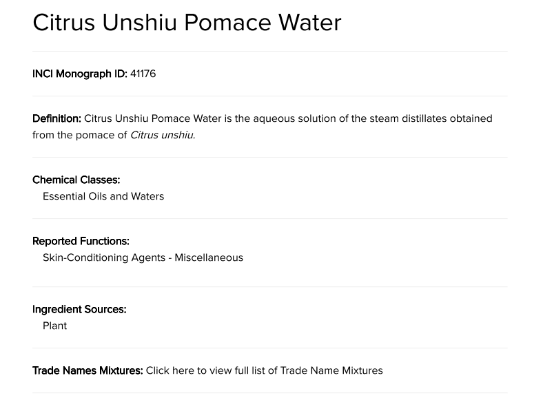

PRESS
언론 보도
제주시트러스랩스의 혁신 스토리를 전하는 뉴스

2026.01.19
스타트업데일리
제주시트러스랩스, 독자 원료 '귤박수' INCI 등재 및 글로벌 시장 진출
귤박수(INCI ID: 41176)의 국제 성분명 확보를 기점으로 베트남·중동 해외 시장별 맞춤형 전략을 가동 중이다.

2026.01.12
원프레스
제주시트러스랩스 '귤박수', INCI 등재로 글로벌 화장품 원료 시장 문 연다
귤박수(INCI Monograph ID: 41176)의 국제 성분명 확보를 기점으로 전 세계 화장품 시장 진출의 발판을 마련했다.

2025.11.12
뉴스펭귄
4만 톤 버려지던 감귤 폐기물이 자원으로 변신했다
해마다 5~7만 톤 버려지며 환경오염을 유발했던 감귤 부산물이 고부가가치 산업 소재로 부활하고 있다.